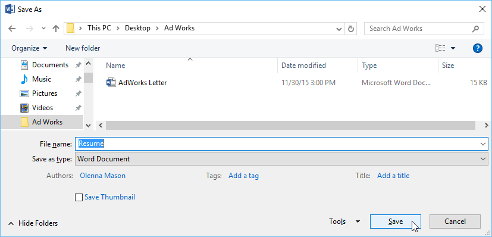
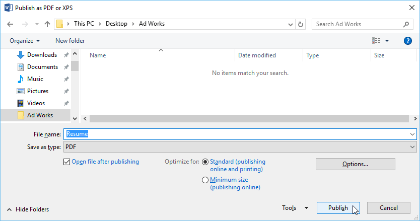

Simpan dan Simpan Sebagai
Word menawarkan dua cara untuk menyimpan file: Save dan Save As. Opsi ini bekerja dengan cara yang serupa, dengan beberapa perbedaan penting.
Simpan : Saat Anda membuat atau mengedit dokumen, Anda akan menggunakan perintah Simpan untuk menyimpan perubahan Anda. Anda akan sering menggunakan perintah ini. Saat Anda menyimpan file, Anda hanya perlu memilih nama file dan lokasi pertama kali. Setelah itu, Anda dapat mengklik perintah Save untuk menyimpannya dengan nama dan lokasi yang sama.
Save As : Anda akan menggunakan perintah ini untuk membuat salinan dokumen sambil tetap menyimpan aslinya. Saat Anda menggunakan Simpan Sebagai, Anda harus memilih nama dan/atau lokasi yang berbeda untuk versi yang disalin.
Tentang OneDrive
Sebagian besar fitur di Microsoft Office, termasuk Word, ditujukan untuk menyimpan dan berbagi dokumen secara online. Ini dilakukan dengan OneDrive, yang merupakan ruang penyimpanan online untuk dokumen dan file Anda. Jika Anda ingin menggunakan OneDrive, pastikan Anda masuk ke Word dengan akun Microsoft Anda. Tinjau pelajaran kami tentang Memahami OneDrive untuk mempelajari lebih lanjut.
Untuk menyimpan dokumen:
Penting untuk menyimpan dokumen Anda setiap kali Anda memulai proyek baru atau membuat perubahan pada yang sudah ada. Menabung lebih awal dan sering dapat mencegah pekerjaan Anda hilang. Anda juga harus memperhatikan tempat Anda menyimpan dokumen agar mudah ditemukan nanti.
Cari dan pilih perintah Simpan di Bilah Alat Akses Cepat.

Jika Anda menyimpan file untuk pertama kalinya, panel Save As akan muncul di tampilan Backstage.
Anda kemudian harus memilih tempat untuk menyimpan file dan memberinya nama file. Klik Browse untuk memilih lokasi di komputer Anda. Anda juga dapat mengklik OneDrive untuk menyimpan file ke OneDrive Anda.

Kotak dialog Simpan Sebagai akan muncul. Pilih lokasi di mana Anda ingin menyimpan dokumen.
Masukkan nama file untuk dokumen, lalu klik Simpan.

Dokumen akan disimpan. Anda dapat mengklik perintah Simpan lagi untuk menyimpan perubahan saat Anda memodifikasi dokumen.
Anda juga dapat mengakses perintah Save dengan menekan Ctrl+S pada keyboard Anda.
Menggunakan Simpan Sebagai untuk membuat salinan
Jika Anda ingin menyimpan versi dokumen yang berbeda dengan tetap mempertahankan aslinya, Anda dapat membuat salinan. Misalnya, jika Anda memiliki file bernama Laporan Penjualan, Anda dapat menyimpannya sebagai Laporan Penjualan 2 sehingga Anda dapat mengedit file baru dan tetap merujuk kembali ke versi aslinya.
Untuk melakukan ini, Anda akan mengklik perintah Save As dalam tampilan Backstage. Sama seperti saat menyimpan file untuk pertama kalinya, Anda harus memilih tempat menyimpan file dan memberinya nama file baru.

Untuk mengubah lokasi penyimpanan default:
Jika Anda tidak ingin menggunakan OneDrive, Anda mungkin frustrasi karena OneDrive dipilih sebagai lokasi default saat menyimpan. Jika Anda merasa ini tidak nyaman, Anda dapat mengubah lokasi penyimpanan default sehingga PC ini dipilih secara default.
Klik tab File untuk mengakses tampilan Backstage.

Klik Opsi.

The Word Options kotak dialog akan muncul. Pilih Simpan di sebelah kiri, centang kotak di samping Simpan ke Komputer secara default, lalu klik OK. Lokasi penyimpanan default akan diubah.

Pulihkan Otomatis
Word secara otomatis menyimpan dokumen Anda ke folder sementara saat Anda mengerjakannya. Jika Anda lupa menyimpan perubahan atau jika Word mogok, Anda dapat memulihkan file menggunakan AutoRecover.
Untuk menggunakan PemulihanOtomatis:
Buka Kata. Jika versi file yang disimpan secara otomatis ditemukan, panel Pemulihan Dokumen akan muncul di sebelah kiri.
Klik untuk membuka file yang tersedia. Dokumen akan dipulihkan.

Secara default, Word menyimpan otomatis setiap 10 menit. Jika Anda mengedit dokumen kurang dari 10 menit, Word mungkin tidak membuat versi penyimpanan otomatis.
Jika Anda tidak melihat file yang Anda butuhkan, Anda dapat menelusuri semua file yang disimpan secara otomatis dari tampilan Backstage. Pilih tab File, klik Manage Versions, lalu pilih Recover Unsaved Documents.

Mengekspor dokumen
Secara default, dokumen Word disimpan dalam tipe file.docx. Namun, ada kalanya Anda perlu menggunakan jenis file lain, seperti dokumen PDF atau Word 97-2003. Sangat mudah untuk mengekspor dokumen Anda dari Word ke berbagai jenis file.
Untuk mengekspor dokumen sebagai file PDF:
Mengekspor dokumen Anda sebagai dokumen Adobe Acrobat, umumnya dikenal sebagai file PDF, dapat sangat berguna jika Anda berbagi dokumen dengan seseorang yang tidak memiliki Word. File PDF akan memungkinkan penerima untuk melihat—tetapi tidak mengedit—konten dokumen Anda.
Klik tab File untuk mengakses tampilan Backstage, pilih Export, lalu pilih Create PDF/XPS.

Kotak dialog Simpan Sebagai akan muncul. Pilih lokasi tempat Anda ingin mengekspor dokumen, masukkan nama file, lalu klik Terbitkan.
Jika Anda perlu mengedit file PDF, Word memungkinkan Anda mengonversi file PDF menjadi dokumen yang dapat diedit. Baca panduan kami tentang Mengedit File PDF untuk informasi lebih lanjut.
Untuk mengekspor dokumen ke jenis file lain:
Anda mungkin juga merasa terbantu untuk mengekspor dokumen Anda ke jenis file lain, seperti Dokumen Word 97-2003 jika Anda perlu berbagi dengan orang-orang yang menggunakan versi Word yang lebih lama atau file.txt jika Anda memerlukan versi teks biasa dari dokumen Anda. dokumen.
Klik tab File untuk mengakses tampilan Backstage, pilih Export, lalu pilih Change File Type.

Pilih jenis file, lalu klik Simpan Sebagai.

Kotak dialog Simpan Sebagai akan muncul. Pilih lokasi tempat Anda ingin mengekspor dokumen, masukkan nama file, lalu klik Simpan.
Anda juga dapat menggunakan menu drop-down Save as type di kotak dialog Save As untuk menyimpan dokumen ke berbagai jenis file.

Berbagi dokumen
Word memudahkan berbagi dan berkolaborasi pada dokumen menggunakan OneDrive. Di masa lalu, jika Anda ingin berbagi file dengan seseorang, Anda dapat mengirimkannya sebagai lampiran email. Meskipun nyaman, sistem ini juga membuat beberapa versi dari file yang sama, yang mungkin sulit diatur.
Saat Anda membagikan dokumen dari Word, Anda sebenarnya memberi orang lain akses ke file yang sama persis. Ini memungkinkan Anda dan orang yang Anda bagikan untuk mengedit dokumen yang sama tanpa harus melacak beberapa versi.
Untuk membagikan dokumen, dokumen tersebut harus disimpan terlebih dahulu ke OneDrive Anda.
Untuk membagikan dokumen:
Klik tab File untuk mengakses tampilan Backstage, lalu klik Share.

Sebuah Kirim Tautan jendela akan muncul.
Klik tombol di interaktif di bawah ini untuk mempelajari lebih lanjut tentang berbagai cara berbagi dokumen.

Tantangan!
Buka dokumen latihan kami.
Gunakan Save As untuk membuat salinan dokumen. Beri nama salinan baru Saving Challenge Practice. Anda dapat menyimpannya ke folder di komputer Anda atau ke OneDrive Anda.
Ekspor dokumen Anda sebagai PDF.